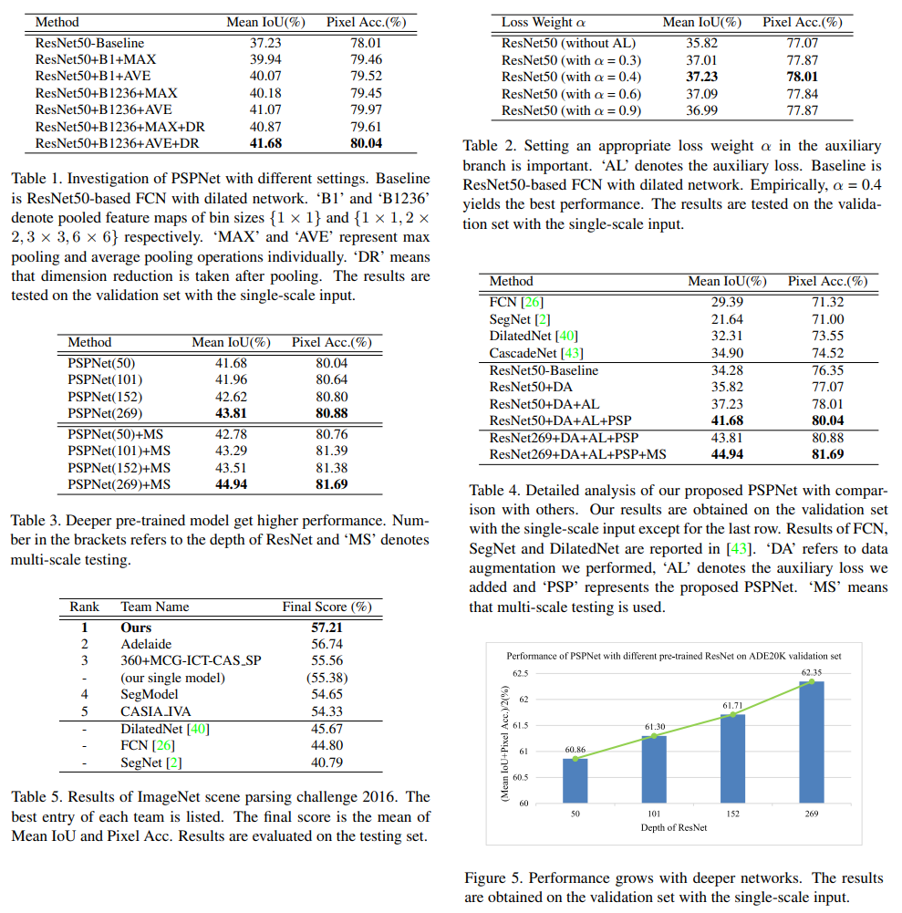
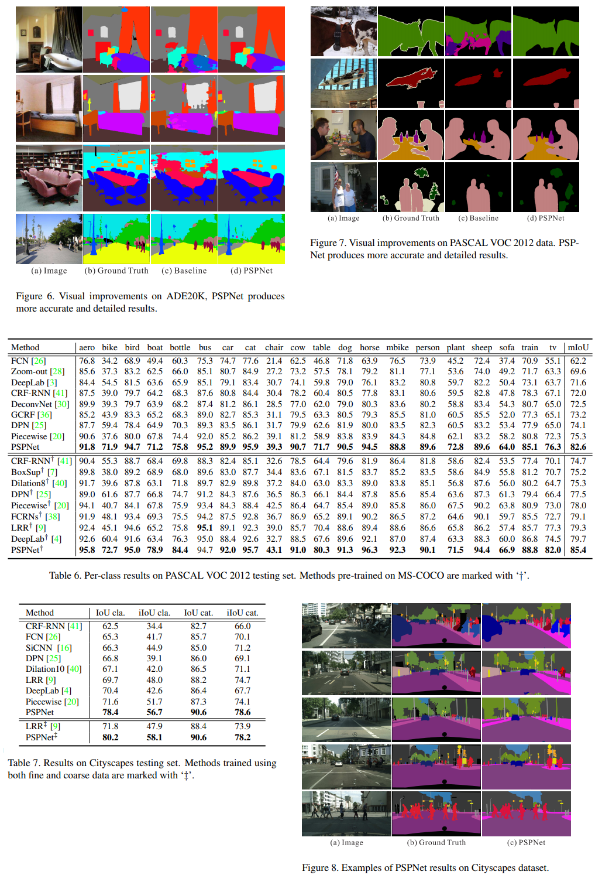

PSPNet - CVPR 2017¶
Title: Pyramid Scene Parsing Network
Review By: Seongsu Park (가짜연구소 논문미식회 2기)
Edited by: Taeyup Song
Reference¶
Motivation¶
FCN은 dynamic object를 이해하는 데 도움을 주었지만 다양한 상황에서 아직 갈 길이 멈
특히, Fig. 2 (1열)에서 boat는 car로 잘못 판단했는데, 이는 둘의 모양이 비슷해서임
그러나, 문맥 측면에서 보았을 때 boathouse는 강 주변에 있으므로 올바른 예측이 가능함
scene context는 중요한 정보가 됨. FCN는 이가 결핍되어 있는데, global scene category clue를 이용해야 함
이 논문에서는 spatial pyramid pooling을 채용해서 이 문제를 해결하고자 함.
{kind=link}
Observations with FCN¶
Mismatched Relationship
Context relationship은 중요한 요소인데, FCN은 이를 고려하지 않음
Fig. 2 (1열)의 car는 river에서는 거의 존재하지 않음
Confusion Categories
혼란스러운 카테고리가 존재함
Fig. 2 (2열)의 building과 skyscraper(마천루, 하늘을 찌를 듯이 솟은 아주 높은 고층 건물)의 구분 방법이 확실하지 않음
Inconspicuous Classes
작은 size를 가지는 물체(신호등, 표지판 등) 등은 찾기 어려움
Fig. 2 (3열)에서 베개 감지를 실패함
Pyramid Scene Parsing Network¶
ResNet의 receptive field는 이론적으로는 이미 input image 크기보다 크지만 Zhou et al.에 의하면 실질적인 크기는 high-level layer에 대해서 매우 작음
이는 충분한 정보를 제공하지 않을 수 있음
Global average pooling
classification에서는 좋은 baseline model이지만 semantic segmentation에서는 충분하지 않음.
벡터를 단순하게 single fuse하는 것은 spatial 관계를 잃고 애매함을 유발할 수 있음.
Feature pyramid pooling
이를 해결하기 위해 제안된 구조
Feature map에서 여러 가지 stride로 pooling한 뒤 upsampling(bilinear interpolation)해 원래의 feature map에 concat함 → pooling stride에 따라 다양한 level의 context를 관찰할 수 있어 out-of-context prediction을 제거할 수 있음.
{kind=link}
Network Architecture
dilated network strategy (atrous, DeepLab)를 사용한 pretrained ResNet 모델을 사용함
final feature map의 크기는 input map 크기의 1/8
채널 수는 ResNet 그대로 사용한 듯 (default=512)
pyramid pooling module에서는 이미지를 pooling해 output size를 1x1, 2x2, 3x3, 6x6로 만듦
실험 결과에서는 average pooling의 결과가 더 좋게 나옴
1x1 컨볼루션 연산 후 concat함(channel 수는 유지)
concat한 이미지의 채널 수는 feature map의 채널의 5배가 됨
dilated FCN보다 크게 연산량이 증가하지 않음
Auxiliary Loss(alpha=0.4)를 사용해 learning process를 도와줌
{kind=link}
Experiment Results¶
 Code Detail Review¶
https://github.com/Lextal/pspnet-pytorch

class PSPNet(nn.Module):
def __init__(self, n_classes=18, sizes=(1, 2, 3, 6), psp_size=2048,
deep_features_size=1024, backend='resnet34',
pretrained=True):
super().__init__()
self.feats = getattr(extractors, backend)(pretrained) # 1
self.psp = PSPModule(psp_size, 1024, sizes) # 2~5
self.drop_1 = nn.Dropout2d(p=0.3)
self.up_1 = PSPUpsample(1024, 256) # 6
self.up_2 = PSPUpsample(256, 64)
self.up_3 = PSPUpsample(64, 64)
self.drop_2 = nn.Dropout2d(p=0.15)
self.final = nn.Sequential(
nn.Conv2d(64, n_classes, kernel_size=1),
nn.LogSoftmax()
)
self.classifier = nn.Sequential( # Auxiliary
nn.Linear(deep_features_size, 256),
nn.ReLU(),
nn.Linear(256, n_classes)
)
def forward(self, x):
f, class_f = self.feats(x) # 1
p = self.psp(f) # 2~5
p = self.drop_1(p)
p = self.up_1(p) # 6
p = self.drop_2(p)
p = self.up_2(p)
p = self.drop_2(p)
p = self.up_3(p)
p = self.drop_2(p)
auxiliary = F.adaptive_max_pool2d(input=class_f, output_size=(1, 1))
.view(-1, class_f.size(1))
return self.final(p), self.classifier(auxiliary)
PSPNet 클래스는 전체적인 네트워크 구조를 나타냄
1은 특징을 추출하고, Auxiliary loss를 생성해내는 부분
2~5 부분은 PSPModule을 통과하는 부분
6 부분은 1/8로 준 이미지 크기를 원래 크기로 되살리면서 정확도 추가 (원본 논문에서 약간 바뀐 점)
class PSPModule(nn.Module):
def __init__(self, features, out_features=1024, sizes=(1, 2, 3, 6)):
super().__init__()
self.stages = []
self.stages = nn.ModuleList([self._make_stage(features, size) for size in sizes]) ¬¬
self.bottleneck = nn.Conv2d(features * (len(sizes) + 1), out_features, kernel_size=1)
self.relu = nn.ReLU()
def _make_stage(self, features, size):
prior = nn.AdaptiveAvgPool2d(output_size=(size, size)) # 2
conv = nn.Conv2d(features, features, kernel_size=1, bias=False) # 3
return nn.Sequential(prior, conv)
def forward(self, feats):
h, w = feats.size(2), feats.size(3)
priors = [F.upsample(input=stage(feats), size=(h, w), mode='bilinear') for stage in self.stages] + [feats] # 4, 5
bottle = self.bottleneck(torch.cat(priors, 1)) # 5
return self.relu(bottle)
class PSPUpsample(nn.Module):
def __init__(self, in_channels, out_channels):
super().__init__()
self.conv = nn.Sequential(
nn.Conv2d(in_channels, out_channels, 3, padding=1),
nn.BatchNorm2d(out_channels),
nn.PReLU()
)
def forward(self, x):
h, w = 2 * x.size(2), 2 * x.size(3)
p = F.upsample(input=x, size=(h, w), mode='bilinear')
return self.conv(p)
2는 output size가 1, 2, 3, 6이 되도록 pooling을 시행함 (1/2, 1/3 등으로 주는 것이 아닌 것에 유의)
3은 pooling한 결과에 1x1 컨볼루션을 수행함 (채널 수는 그대로)
4~5는 한줄로 정의되어 있는데, feats(입력)에 stage(풀링 뒤 1x1 컨볼루션)를 통과한 것을 각각 feats의 크기로 upsampling하고, 이를 feats와 concat함 (결과는 list로 텐서 5개가 연결되어 있음)
그 다음 줄에서는 cat 함수로 연결한 뒤, out_features 채널 수로 맞춰주도록 1x1 컨볼루션을 수행함
def train(data_path, models_path, backend, snapshot, crop_x, crop_y, batch_size, alpha, epochs, start_lr, milestones, gpu):
os.environ["CUDA_VISIBLE_DEVICES"] = gpu
net, starting_epoch = build_network(snapshot, backend)
data_path = os.path.abspath(os.path.expanduser(data_path))
models_path = os.path.abspath(os.path.expanduser(models_path))
os.makedirs(models_path, exist_ok=True)
'''
To follow this training routine you need a DataLoader that yields the tuples of the following format:
(Bx3xHxW FloatTensor x, BxHxW LongTensor y, BxN LongTensor y_cls) where
x - batch of input images,
y - batch of groung truth seg maps,
y_cls - batch of 1D tensors of dimensionality N: N total number of classes,
y_cls[i, T] = 1 if class T is present in image i, 0 otherwise
'''
train_loader, class_weights, n_images = None, None, None
optimizer = optim.Adam(net.parameters(), lr=start_lr)
scheduler = MultiStepLR(optimizer, milestones=[int(x) for x in milestones.split(',')])
for epoch in range(starting_epoch, starting_epoch + epochs):
seg_criterion = nn.NLLLoss2d(weight=class_weights)
cls_criterion = nn.BCEWithLogitsLoss(weight=class_weights)
epoch_losses = []
train_iterator = tqdm(loader, total=max_steps // batch_size + 1)
net.train()
for x, y, y_cls in train_iterator:
steps += batch_size
optimizer.zero_grad()
x, y, y_cls = Variable(x).cuda(), Variable(y).cuda(), Variable(y_cls).cuda()
out, out_cls = net(x)
seg_loss, cls_loss = seg_criterion(out, y), cls_criterion(out_cls, y_cls)
loss = seg_loss + alpha * cls_loss
epoch_losses.append(loss.data[0])
status = '[{0}] loss = {1:0.5f} avg = {2:0.5f}, LR = {5:0.7f}'.format(
epoch + 1, loss.data[0], np.mean(epoch_losses), scheduler.get_lr()[0])
train_iterator.set_description(status)
loss.backward()
optimizer.step()
scheduler.step()
torch.save(net.state_dict(), os.path.join(models_path, '_'.join(["PSPNet", str(epoch + 1)])))
train_loss = np.mean(epoch_losses)
if __name__ == '__main__':
train()
segmentation loss는 NLLLoss2d loss를 사용함 (Cross entropy loss는 softmax를 적용한 뒤 loss를 측정하는 것에 비해, NLLLoss는 softmax를 적용하지 않음)
classification loss는 BCEWithLogitsLoss를 사용함 (Cross entropy에서 softmax 대신 sigmoid를 사용함)
총 loss는 segmentation loss에 일부의 classification loss를 더한 값
class ResNet(nn.Module):
def __init__(self, block, layers=(3, 4, 23, 3)):
self.inplanes = 64
super(ResNet, self).__init__()
self.conv1 = nn.Conv2d(3, 64, kernel_size=7, stride=2, padding=3,
bias=False)
self.bn1 = nn.BatchNorm2d(64)
self.relu = nn.ReLU(inplace=True)
self.maxpool = nn.MaxPool2d(kernel_size=3, stride=2, padding=1)
self.layer1 = self._make_layer(block, 64, layers[0])
self.layer2 = self._make_layer(block, 128, layers[1], stride=2)
self.layer3 = self._make_layer(block, 256, layers[2], stride=1, dilation=2)
self.layer4 = self._make_layer(block, 512, layers[3], stride=1, dilation=4)
for m in self.modules():
if isinstance(m, nn.Conv2d):
n = m.kernel_size[0] * m.kernel_size[1] * m.out_channels
m.weight.data.normal_(0, math.sqrt(2. / n))
elif isinstance(m, nn.BatchNorm2d):
m.weight.data.fill_(1)
m.bias.data.zero_()
def _make_layer(self, block, planes, blocks, stride=1, dilation=1):
downsample = None
if stride != 1 or self.inplanes != planes * block.expansion:
downsample = nn.Sequential(
nn.Conv2d(self.inplanes, planes * block.expansion,
kernel_size=1, stride=stride, bias=False),
nn.BatchNorm2d(planes * block.expansion),
)
layers = [block(self.inplanes, planes, stride, downsample)]
self.inplanes = planes * block.expansion
for i in range(1, blocks):
layers.append(block(self.inplanes, planes, dilation=dilation))
return nn.Sequential(*layers)
def forward(self, x):
x = self.conv1(x)
x = self.bn1(x)
x = self.relu(x)
x = self.maxpool(x)
x = self.layer1(x)
x = self.layer2(x)
x_3 = self.layer3(x)
x = self.layer4(x_3)
return x, x_3
일반적인 resnet에서 layer3을 통과한 feature를 auxiliary loss 측정을 위해 같이 return함